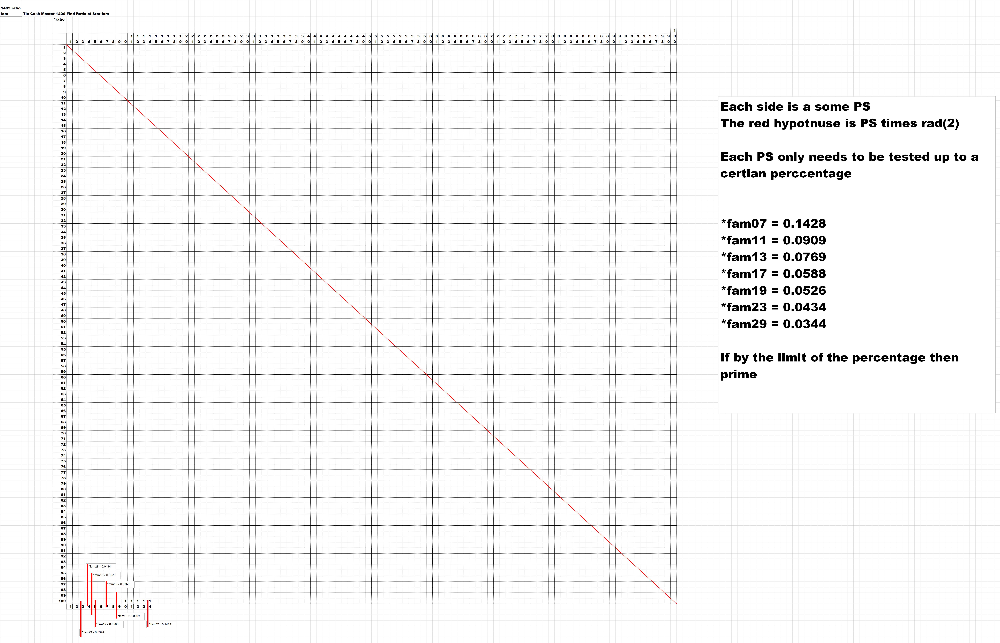
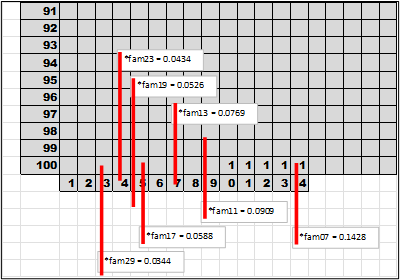
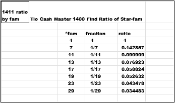
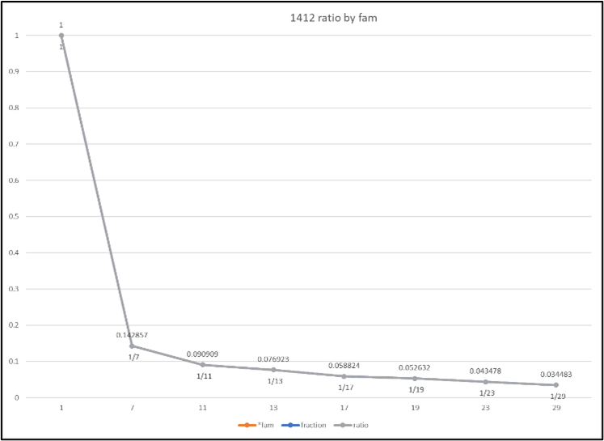
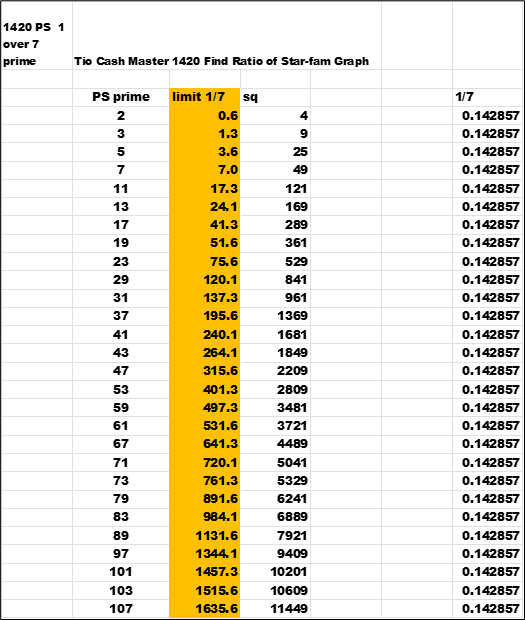

In the last chapter 'Chapter 1300 Make 05 c Enhanced'
the data in the charts is inside a square box.
The next step is to try and find a pattern inside the box in relation to prime or non-prime.
Using the *fam formulas (PSL = (PS - *fam) / 30) to look for a constant.
Find the rail that the *fam numbers live on.
Take the PS and multiply by the *fam ; the total is under the 'multiplication' column.
Next apply the *fam formula under the 'true' column. If MOD() is an integer then
calculate the (*ratio of PS / multiplication).
If MOD() is not an integer , then hide the MOD() and the *ratio columns.
Just looking for some common data.
Each group (g) is highlighted with a border view to show the breaks of thirty.
There are two interesting points about looking at *ratio data.
1) The calculated *ratio shown moves from row 1 towards row 8 in each *fam.
See cells with borders.
2) The *fam to solve the PSL is either *fam01 of *fam19 for the *ratio solution.
And , most important look at the symmetry. Balance of the values.
There are all kinds of hidden symmetry throughout PS numbers.
In each of the prior eight charts , the position of the MOD() and ratio solutions moves down from one row to the next row in each the eight charts' *ratio.
This is any PS , cut up into 100 pieces to make the percentages. It is the square box.
Each side is some PS.
The red hypotenuse is PS times rad(2).
Each PS only needs to be tested up to a certain percentage.
*fam01 = 1.0000
*fam07 = 0.1428
*fam11 = 0.0909
*fam13 = 0.0769
*fam17 = 0.0588
*fam19 = 0.0526
*fam23 = 0.0434
*fam29 = 0.0344
If by the limit of the percentage there are no factors , then prime.
Close up of the bottom of the chart above.
Each *fam has its own *ratio.
A graph of the diminishing ratio as the *fam grows.
 next